일반기계기사 (2016-03-06 기출문제)
1과목: 재료역학
1. 그림과 같이 최대 qo인 삼각형 분포하중을 받는 버팀 외팔보에서 B지점의 반력 RB를 구하면?
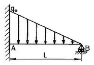
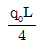
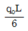
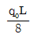
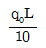
(정답률: 36%)

2. 그림과 같은 장주(long column)에 Pcr을 가했더니 오른쪽 그림과 같이 좌굴이 일어났다. 이 때 오일러 좌굴응력 σcr은? (단, 세로탄성계수는 E, 기둥 단면의 회전반경(radius of gyration)은 r, 길이는 L이다.)
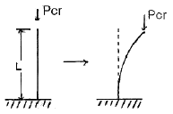
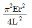
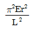
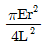
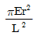
(정답률: 47%)
3. 다음과 같은 평면응력상태에서 최대전단응력은 약 몇 MPs 인가?
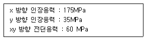
- 38
- 53
- 92
- 108
(정답률: 62%)
4. 반지름이 r인 원형 단면의 단순보에 전단력 F가 가해졌다면, 이 때 단순보에 발생하는 최대 전단응력은?
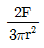
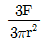
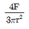
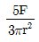
(정답률: 67%)
5. 바깥지름이 46mm인 속이 빈 축이 120kW의 동력을 전달하는데 이 때의 각속도는 40 rev/s이다. 이 축의 허용비틀림응력이 80MPa 일 때, 안지름은 약 몇 mm 이하이어야 하는가?
- 29.8
- 41.8
- 36.8
- 48.8
(정답률: 49%)
6. 지름 d인 원형단면으로부터 절취하여 단면2차모멘트 I가 가장 크도록 사각형 단면 [폭(b)×높이(h)]을 만들 때 단면 2차 모멘트를 사각형 폭(b)에 관한 식으로 옳게 나타낸 것은?
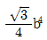
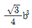
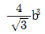
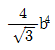
(정답률: 27%)
7. 그림과 같은 외팔보가 하중을 받고 있다. 고정단에 발생하는 최대굽힘 모멘트는 몇 Nㆍm인가?
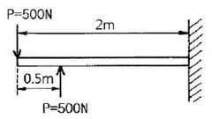
- 250
- 500
- 750
- 1000
(정답률: 59%)
8. 재료시험에서 연강재료의 세로탄성계수가 210GPa로 나타났을 때 포아송 비(v)가 0.30. 이면 이 재료의 전단탄성계수 G는 몇 GPa인가?
- 8.⑤
- 10.51
- 35.21
- 80.58
(정답률: 62%)
9. 그림과 같이 강봉에서 A, B가 고정되어 있고 25℃에서 내부응력은 0인 상태이다. 온도가 -40℃로 내려갔을 때 AC 부분에서 발생하는 응력은 약 몇 MPa인가? (단, 그림에서 A1은 AC 부분에서의 단면적이도 A2는 BC 부분에서의 단면적이다. 그리고 강봉의 탄성계수는 200GPa이고, 열팽창계수는 12×10-6/℃이다.)
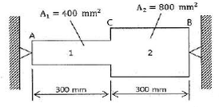
- 416
- 350
- 208
- 154
(정답률: 19%)
10. 그림과 같은 트러스 구조물의 AC, BC부재가 핀C에서 수직하중 P=1000N의 하중을 받고 있을 때 AC부재의 인장력은 약 몇 N인가?
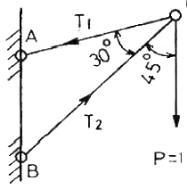
- 141
- 707
- 1414
- 1732
(정답률: 61%)
11. 보의 길이 ℓ에 등분포하중 w를 받는 직사각형 단순보의 최대 처짐량에 대하여 옳게 설명한 것은? (단, 보의 자중은 무시한다.)
- 보의 폭에 정비례한다.
- ℓ의 3승에 정비례한다.
- 보의 높이의 2승에 반비례한다.
- 세로탄성계수에 반비례한다.
(정답률: 64%)
12. 양단이 고정된 축을 그림과 같이 m-n 단면에서 T만큼 비틀면 고정단 AB에서 생기는 저항 비틀림 모멘트의 비 TA/TB는?
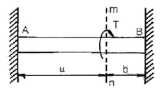
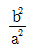
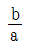
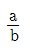
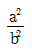
(정답률: 60%)
13. 그림과 같은 원형 단면봉에 하중 P가 작용할 때 이 봉의 신장량은? 9단, 봉의 단면적은 A, 길이는 L, 세로탄성계수는 E이고, 자중 W를 고려해야 한다.)
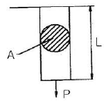
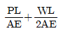
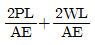
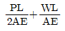
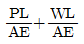
(정답률: 55%)
14. 직사각형 단면(폭×높이)이 4cm×8cm이고 길이 1m의 외팔보의 전 길이에 6kN/m의 등분포하중이 작용할 때 보의 최대 처짐각은? (단, 탄성계수 E=210GPa 이고 보의 자중은 무시한다.)
- 0.0028rad
- 0.0028°
- 0.0008rad
- 0.0008°
(정답률: 53%)
15. 다음 중 수직응력(normal stress)을 발생시키지 않는 것은?
- 인장력
- 압축령
- 비틀림 모멘트
- 굽힘 모멘트
(정답률: 59%)
16. 그림과 같은 일단 고정 타단지지 보에 등분포하중 ⍵가 작용하고 있다. 이 경우 반력 RA와 RB는? (단, 보의 굽힘강성 EI는 일정하다.)
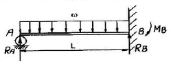
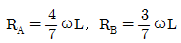
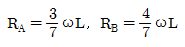
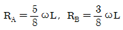
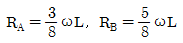
(정답률: 60%)
17. 그림과 같은 블록의 한쪽 모서리에 수직력 10kN이 가해질 경우, 그림에서 위치한 A점에서의 수직응력 분포는 약 몇 kPa인가?
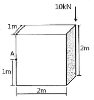
- 25
- 30
- 35
- 40
(정답률: 27%)
18. 길이가 3.14m인 원형 단면의 축 지름이 40mm일 때 이 축이 비틀림 모멘트 100Nㆍm를 받는 다면 비틀림각은? (단, 전단 탄성계수는 80GPa이다.)
- 0.156°
- 0.251°
- 0.895°
- 0.625°
(정답률: 52%)
19. 단면의 치수가 b×h=6cm×3cm인 강철보가 그림과 같이 하중을 받고 있다. 보에 작용하는 최대 굽힘응력은 약 몇 N/cm2 인가?
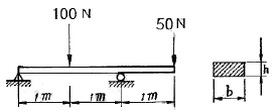
- 278
- 556
- 1111
- 2222
(정답률: 48%)
20. 힘에 의한 재료의 변형이 그 힘의 제거(除去)와 동시에 원형(原形)으로 복귀하는 재료의 성질은?
- 소성(plasticity)
- 탄성(elasticity)
- 연성(ductility)
- 취성(brittleness)
(정답률: 67%)
2과목: 기계열역학
21. 랭킨 사이클의 열효율 증대 방법에 해당하지 않는 것은?
- 복수기(응축기) 압력 저하
- 보일러 압력 증가
- 터빈의 질량유량 증가
- 보일러에서 증기를 고온으로 과열
(정답률: 40%)
22. 질량이 m이 비체적이 v인 구(sphere)의 반지름이 R이면, 질량이 4m이고, 비체적이 2v인 구의 반지름은?
- 2R
- √2R
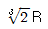
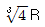
(정답률: 40%)
23. 내부에너지가 40kJ, 절대압력이 200kPa, 체적이 0.1m3, 절대온도가 300K인 계의 엔탈피는 약 몇 kJ인가?
- 42
- 60
- 80
- 240
(정답률: 63%)
24. 비열비가 1.29, 분자량이 44인 이상 기체의 정압비열은 약 몇 kJ/kmolㆍK인가?(단, 일반기체상수는 8.314kJ/kmolㆍK이다.)
- 0.51
- 0.69
- 0.84
- 0.91
(정답률: 60%)
25. 기체가 열량 80 kJ을 흡수하여 외부에 대하여 20kJ의 일을 하였다면 내부에너지 변화는 몇 kJ인가?
- 20
- 60
- 80
- 100
(정답률: 61%)
26. 다음 중 폐쇄계의 정의를 올바르게 설명한 것은?
- 동작물질 및 일과 열이 그 경계를 통과하지 아니하는 특정 공간
- 동작물질은 계의 경계를 통과할 수 없으나 열과 일은 경계를 통과할 수 있는 특정 공간
- 동작물질은 계의 경계를 통과할 수 있으나 열과 일은 경계를 통과할 수 없는 특정 공간
- 동작물질 및 일과 열이 모두 그 경계를 통과할 수 있는 특정 공간
(정답률: 48%)
27. 실린더 내부에 기체가 채워져 있고 실린더에는 피스톤이 끼워져 있다. 초기 압력 50kPa, 초기 체적 0.⑤m3인 기체를 버너로 PV1.4=constant가 되도록 가열하여 기체 체적이 0.2m3이 되었다면, 이 과정 동안 시스템이 한 일은?
- 1.33 kJ
- 2.66 kJ
- 3.99 kJ
- 5.32 kJ
(정답률: 45%)
28. 체적이 0.01m3인 밀폐용기에 대기압의 포화혼합물이 들어있다. 용기 체적의 반은 포화액체, 나머지 반은 포화증기가 차지하고 있다면, 포화혼합물 전체의 질량과 건도는? 9단, 대기압에서 포화액체와 포화증기의 비체적은 각각 0.001044m3/kg, 1.6729m3/kg 이다.)
- 전체질량 : 0.0119 kg, 건도 : 0.50
- 전체질량 : 0.0119 kg, 건도 : 0.00062
- 전체질량 : 4.792 kg, 건도 : 0.50
- 전체질량 : 4.792 kg, 건도 : 0.00062
(정답률: 40%)
29. 여름철 외기의 온도가 30℃일 때 김치냉장고의 내부를 5℃로 유지하기 위해 3kW의 열을 제거해야 한다. 필요한 최소 동력은 약 몇 kW인가? (단, 이 냉장고는 카르노 냉동기이다.)
- 0.27
- 0.54
- 1.54
- 2.73
(정답률: 54%)
30. 준평형 정적과정을 거치는 시스템에 대한 열전달량은? (단, 운동에너지와 위치에너지의 변화는 무시한다.)
- 0이다.
- 이루어진 일량과 같다.
- 엔탈피 변화량과 같다.
- 내부에너지 변화량과 같다.
(정답률: 56%)
31. 2개의 정적과정과 2개의 등온과정으로 구성된 동력 사이클은?
- 브레이턴(brayton)사이클
- 에릭슨(ericsson)사이클
- 스털링(stirling)사이클
- 오토(otto)사이클
(정답률: 32%)
32. 4kg의 공기가 들어 있는 용기 A(체적 0.5m3)와 진공 용기 B(체적 0.3m3)사이를 밸브로 연결하였다. 이 밸브를 열어서 공기가 자유팽창하여 평형에 도달했을 경우 엔트로피 증가량은 약 몇 kJ/K 인가? (단, 온도 변화는 없으며 공기의 기체상수는 0.287 kJ/kgㆍK 이다.)(오류 신고가 접수된 문제입니다. 반드시 정답과 해설을 확인하시기 바랍니다.)
- 0.54
- 0.49
- 0.42
- 0.37
(정답률: 52%)
33. 물 2kg을 20℃에서 60℃가 될때까지 가열할 경우 엔트로피 변화량은 약 몇 kJ/K 인가? 9단, 물의 비열은 4.184 kJ/kgㆍK이고, 온도 변화과정에서 체적은 거의 변화가 없다고 가정한다.)
- 0.78
- 1.07
- 1.45
- 1.96
(정답률: 60%)
34. 밀폐 시스템이 압력 P1=200kPa, 체적 V1=0.1m3 인 상태에서 P2=100kPa, V2=0.3m3인 상태까지 가역팽창되었다. 이 과정이 P-V 선도에서 직선으로 표시된다면 이 과정 동안 시스템이 한 일은 약 몇 kJ 인가?
- 10
- 20
- 30
- 45
(정답률: 54%)
35. 랭킨 사이클을 구성하는 요소는 펌프, 보일러, 터빈, 응축기로 구성된다. 각 구성 요소가 수행하는 열역학적 변화 과정으로 틀린 것은?
- 펌프 : 단열 압축
- 보일러 : 정압 가열
- 터빈 : 단열 팽창
- 응축기 : 정적 냉각
(정답률: 57%)
36. 온도 600℃의 구리 7kg을 8kg의 물속에 넣어 열적 평형을 이룬 후 구리와 물의 온도가 64.2℃가 되었다면 물의 처음 온도는 약 몇 ℃인가? (단, 이 과정 중 열손실은 없고, 구리의 비열은 0.386 kJ/kgㆍK이며 물의 비열은 4.184kJ/kgㆍK 이다.)
- 6℃
- 15℃
- 21℃
- 84℃
(정답률: 58%)
37. 한 시간에 3600kg의 석탄을 소비하여 6⑤0kW를 발생하는 증기터빈을 사용하는 화력발전소가 있다면, 이 발전소의 열효율은 약 몇 %인가? (단, 석탄의 방열량은 29900 kJ/kg 이다.)
- 약 20%
- 약 30%
- 약 40%
- 약 50%
(정답률: 63%)
38. 증기 압축 냉동기에서 냉매가 순환되는 경로를 올바르게 나타낸 것은?
- 증발기 → 팽창밸브 → 응축기 → 압축기
- 증발기 → 압축기 → 응축기 → 팽창밸브
- 팽창밸브 → 압축기 → 응축기 → 증발기
- 응축기 → 증발기 → 압축기 → 팽창밸브
(정답률: 52%)
39. 고온 400℃, 저온 50℃의 온도 범위에서 작동하는 Carnot 사이클 열기관의 열효울을 구하면 몇 % 인가?
- 37
- 42
- 47
- 52
(정답률: 64%)
40. 계가 비가역 사이클을 이룰 때 클라우지우스(Clausius)의 적분을 옳게 나타낸 것은? (단, T는 온도, Q는 열량이다.)(오류 신고가 접수된 문제입니다. 반드시 정답과 해설을 확인하시기 바랍니다.)
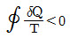
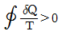
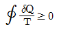
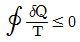
(정답률: 43%)
3과목: 기계유체역학
41. 그림과 같이 수평 원관 속에서 완전히 발달된 층류 유동이라고 할 때 유량 Q의 식으로 옳은 것은? (단, μ는 점성계수, Q는 유량, P1과 P2는 1과 2지점에서의 압력을 나타낸다.)
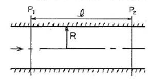
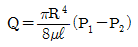
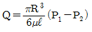
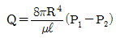
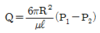
(정답률: 58%)
42. 골프공(지름 D=4cm, 무게 W=0.4N)이 50m/s의 속도로 날아가고 있을 때, 골프공이 받는 항력은 골프공 무게의 몇 배인가? (단, 골프공의 항력계수 CD=0.24이고, 공기의 밀도는 1.2 kg/m3 이다.)
- 4.52배
- 1.7배
- 1.13배
- 0.452배
(정답률: 56%)
43. Navier-Stokes 방정식을 이용하여, 정상, 2차원 비압축성 속도장 V=axi-axj에서 압력을 x, y의 방정식으로 옳게 나타낸 것은? (단, a는 상수이고, 원점에서의 압력은 0이다.)
(정답률: 19%)
44. 물이 흐르는 관의 중심에 피토관을 삽입하여 압력을 측정하였다. 전압력은 20mAq, 정압은 5mAq 일 때 관 중심에서 물의 유속은 몇 약 m/s인가?
- 10.7
- 17.2
- 5.4
- 8.6
(정답률: 47%)
45. 어떤 액체가 800kPa의 압력을 받아 체적이 0.⑤% 감소한다면, 이 액체의 체적탄성계수는 얼마인가?
- 1265 kPa
- 1.6×104 kPa
- 1.6×106 kPa
- 2.2×106 kPa
(정답률: 45%)
46. 30m의 폭을 가진 개수로(open channel)에 20cm의 수신과 5m/s의 유속으로 물이 흐르고 있다. 이 흐름의 Froude수는 얼마인가?
- 0.57
- 1.57
- 2.57
- 3.57
(정답률: 51%)
47. 수평으로 놓인 지름 10cm, 길이 200m인 파이프에 완전히 열린 글로브 밸브가 설치되어 있고, 흐르는 물의 평균속도는 2m/s이다. 파이프의 관 마찰계수가 0.02 이고 전체 수두 손실이 10m 이면, 글로브 밸브의 손실계수는?
- 0.4
- 1.8
- 5.8
- 9.0
(정답률: 41%)
48. 점성계수는 0.3 poise, 동점성계수는 2 stokes인 유체의 비중은?
- 6.7
- 1.5
- 0.67
- 0.15
(정답률: 43%)
49. 그림에서 h=100cm이다. 액체의 비중이 1.50일 때 A점의 계기압력은 몇 kPa 인가?
- 9.8
- 14.7
- 9800
- 14700
(정답률: 53%)
50. 비중 0.9, 점성계수 5×10-3Nㆍs/m2의 기름이 안지름 15cm의 원형관 속을 0.6m/s의 속도로 흐를 경우 레이놀즈수는 약 얼마인가?
- 16200
- 2755
- 1651
- 3120
(정답률: 59%)
51. 그림과 같이 비점성, 비압축성 유체가 쐐기 모양의 벽면 사이를 흘러 작은 구멍을 통해 나간다. 이 유동을 극좌표계(r, θ)에서 근사적으로 표현한 속도포텐셜은 ∅=3lnr 일 때 원호 r=2(0≤θ≤π/2)를 통과하는 단위 길이당 체적유량은 얼마인가?
- π/4
- π
(정답률: 35%)
52. 평판이서 층류 경계층의 두께는 다음 중 어느 값에 비례하는가? (단, 여기서 x는 평판의 선단으로부터의 거리이다.)
(정답률: 54%)
53. 다음 중 동점성계수)kinematic viscosity)의 단위는?
- Nㆍs/m2
- kg/(mㆍs)
- m2/s
- m/s2
(정답률: 51%)
54. 물제트가 연직하 방향으로 떨어지고 있다. 높이 12m 지점에서의 제트 지름은 5cm, 속도는 24m/s였다. 높이 4.5m 지점에서의 물제트의 속도는 약 몇 m/s인가? (단, 손실수두는 무시한다.)
- 53.9
- 42.7
- 35.4
- 26.9
(정답률: 44%)
55. 반지름 R인 원형 수문이 수직으로 설치되어 있다. 수면으로부터 수문에 작용하는 물에 의한 전압력의 작용점까지의 수직거리는? (단, 수문의 최상단은 수면과 동일 위치에 있으며 h는 수면으로부터 원판의 중심(도심)까지의 수직거리이다.)
(정답률: 41%)
56. 다음 중 수력기울기선(Hydraulic Grade Line)은 에너지구배선(Energy Grade Line)에서 어떤 것을 뺀 값인가?
- 위치 수두 값
- 속도 수두 값
- 압력 수두 값
- 위치 수두와 압력 수두를 합한 값
(정답률: 55%)
57. 그림과 같은 통에 물이 가득차 있고 이것이 공중에서 자유낙하할 때, 통에서 A점의 압력과 B점의 압력은?
- A점의 압력은 B점의 압력의 1/2 이다.
- A점의 압력은 B점의 압력의 1/4 이다.
- A점의 압력은 B점의 압력의 2배 이다.
- A점의 압력은 B점의 압력의 압력과 같다.
(정답률: 42%)
58. 1/10 크기의 모형 잠수함을 해수에서 실험한다. 실제 잠수함을 2m/s로 운전하려면 모형 잠수함은 약 몇 m/s의 속도로 실험하여야 하는가?
- 20
- 5
- 0.2
- 0.5
(정답률: 52%)
59. 안지름 D1, D2의 관이 직렬로 연결되어 있다. 비압축성 유체가 관 내부를 흐를 때 지름 D1인 관과 D2인 관에서의 평균유속이 각각 V1, V2 이면 D1/D2은?
- V1/V2
- V2/V1
(정답률: 50%)
60. 그림과 같이 속도 3m/s로 운동하는 평판에 속도 10m/s인 물 분류가 직각으로 충돌하고 있다. 분류의 단면적이 0.01m2이라고 하면 평판이 받는 힘은 몇 N이 되겠는가?
- 295
- 490
- 980
- 16900
(정답률: 56%)
4과목: 기계재료 및 유압기기
61. 가공 열처리 방법에 해당되는 것은?
- 마퀜칭(marquenching)
- 오스포밍(ausforming)
- 마템퍼링(martempering)
- 오스템퍼링(austempering)
(정답률: 43%)
62. 니켈-크롬 합금강에서 뜨임 메짐을 방지하는 원소는?
- Cu
- Mo
- Ti
- Zr
(정답률: 60%)
63. 재료의 연성을 알기 위해 구리판, 알루미늄판 및 그 밖의 연성판재를 가압 형성하여 변형 능력을 시험하는 것은?
- 굽힙 시험
- 압축 시험
- 비틀림 시험
- 에릭센 시험
(정답률: 53%)
64. Y 합금의 주성분으로 옳은 것은?
- Al+Cu+Ni+Mg
- Al+Cu+Mn+Mg
- Al+Cu+Sn+Zn
- Al+Cu+Si+Mg
(정답률: 48%)
65. 다음 중 비중이 가장 작아 항공기 부품이나 전자 및 전기용 제품의 케이스 용도로 사용되고 있는 합금재료는?
- Ni 합금
- Cu 합금
- Pb 합금
- Mg 합금
(정답률: 64%)
66. 그림은 3성분계를 표시하는 다이이그램이다. X합금에 속하는 B의 성분은?
- 이다.
- 이다.
- 이다.
- 이다.
(정답률: 48%)
67. 주철에 대한 설명으로 틀린 것은?
- 흑연이 많을 경우에는 그 파단면이 회색을 띤다.
- C와 P의 양이 적고 냉각이 빠를수록 흑연화 하기 쉽다.
- 주청 중에 전 탄소량은 유리탄소와 화합탄소를 합한 것이다.
- C와 Si의 함량에 따른 주철의 조직관계를 마우러 조직도라 한다.
(정답률: 60%)
68. 금속재료에서 단위격자 소속 원자수가 2이고 충전율이 68%인 결정구조는?
- 단순입방격자
- 면심입방격자
- 체심입방격자
- 조밀육방격자
(정답률: 59%)
69. 순철의 변태점이 아닌 것은?
- A1
- A2
- A3
- A4
(정답률: 59%)
70. 오스테나이트형 스테인리스강의 예민화(sensitize)를 방지하기 위하여 Ti, Nb등의 원소를 함유시키는 이유는?
- 입계부식을 촉진한다.
- 강중의 질소(N)와 질화물을 만들어 안정화 시킨다.
- 탄화물을 형성하여 크롬 탄화물의 생성을 억제한다.
- 강중의 산소(O)와 산화물을 형성하여 예민화를 방지한다.
(정답률: 47%)
71. 방향제어밸브 기호 중 다음과 같은 설명에 해당하는 기호는?
(정답률: 63%)
72. 주로 시스템의 작동이 정부하일 때 사용되며, 실린더의 속도 제어를 실린더에 공급되는 입구측 유량을 조절하여 제어하는 회로는?
- 로크 회로
- 무부하 회로
- 미터인 회로
- 미터아웃 회로
(정답률: 69%)
73. 유압 필터를 설치하는 방법은 크게 복귀라인에 설치하는 방법, 흡입라인에 설치하는 방법, 압력 라인에 설치하는 방법, 바이패스 필터를 설치하는 방법으로 구분할 수 있는데, 다음 회로는 어디에 속하는가?
- 복귀라인에 설치하는 방법
- 흡입라인에 설치하는 방법
- 압력 라인에 설치하는 방법
- 바이패스 필터를 설치하는 방법
(정답률: 49%)
74. 그림과 같은 유압회로의 명칭으로 옳은 것은?
- 유압모터 병렬배치 미터인 회로
- 유압모터 병렬배치 미터아웃 회로
- 유압모터 직렬배치 미터인 회로
- 유압모터 직렬배치 미터아웃 회로
(정답률: 49%)
75. 유압실린더로 작동되는 리프터에 작용하는 하중이 15000N이고 유압의 압력이 7.5MPa일 때 이 실린더 내부의 유체가 하중을 받는 단면적은 약 몇 cm2 인가?
- 5
- 20
- 500
- 2000
(정답률: 51%)
76. 그림과 같은 유압기호의 설명으로 틀린 것은?
- 유압 펌프를 의미한다.
- 1장향 유동을 나타낸다.
- 가변 용량형 구조이다.
- 외부 드레인을 가졌다.
(정답률: 54%)
77. 유압 작동유에서 공기의 혼입(용해)에 관한 설명으로 옳지 않은 것은?
- 공기 혼입 시 스폰지 현상이 발생할 수 있다.
- 공기 혼입 시 펌프의 캐비테이션 현상을 일으킬 수 있다.
- 압력이 증가함에 따라 공기가 용해되는 양도 증가한다.
- 온도가 증가함에 따라 공기가 용해되는 양도 증가한다.
(정답률: 41%)
78. 유압 및 공기압 용어에서 스템 모양 입력신호의 지령에 따르는 모터로 정의되는 것은?
- 오버 센터 모터
- 다공정 모터
- 유압 스테핑 모터
- 베인 모터
(정답률: 62%)
79. 그림의 유압 회로는 펌프 출구 직후에 릴리프 밸브를 설치한 회로로서 안전 측면을 고려하여 제작된 회로이다. 이 회로의 명칭으로 옳은 것은?
- 압력 설정 회로
- 카운터 밸런스 회로
- 시퀀스 회로
- 감압 회로
(정답률: 32%)
80. 다음 중 펌프 작동 중에 유면을 적절하게 유지하고, 발생하는 열을 방산하여 강치의 가열을 방지하며, 오일 중의 공기나 이물질을 분리시킬 수 있는 기능을 갖춰야 하는 것은?
- 오일 필터
- 오일 제너레이터
- 오일 미스트
- 오일 탱크
(정답률: 49%)
5과목: 기계제작법 및 기계동력학
81. 공작물의 길이가 600mm, 지름이 25mm인 강재를 아래의 조건으로 선방 가공할 때 소요되는 가공시간(t)은 약 몇 분인가? (단, 1회 가공이다.)
- 1.1
- 2.1
- 3.1
- 4.1
(정답률: 29%)
82. 압출 가공(extrusion)에 관한 일반적인 설명으로 틀린 것은?
- 직접 압출보다 간접 압출에서 마찰력이 적다.
- 직접 압출보다 간접 압출에서 소요동력이 적게 든다.
- 압출 방식으로는 직접(전방) 압출과 간접(후방) 압출 등이 있다.
- 직접 압출이 간접 압출보다 압출 종료시 콘테이너에 남는 소재량이 적다.
(정답률: 52%)
83. 와이어 방전 가공액 비저항값에 대한 설명으로 틀린 것은?
- 비저항값이 낮을 때에는 수돗물을 첨가한다.
- 일반적으로 방전가공에서는 10~100kΩㆍcm의 비저항값을 설정한다.
- 비저항값이 높을 때에는 가공액을 이온교환장치로 통과시켜 이온을 제거한다.
- 비저항값이 과다하게 높을 때에는 방전간격이 넓어져서 방전효율이 저하된다.
(정답률: 36%)
84. 전기 저항 용접 중 맞대기 용접의 종류가 아닌 것은?
- 업셋 용접
- 퍼커션 용접
- 플래시 용접
- 플로젝션 용접
(정답률: 40%)
85. 질화법에 관한 설명 중 틀린 것은?
- 경화층은 비교적 얇고, 경도는 침탄한 것보다 크다.
- 질화법은 재료 중심까지 경화하는데 그 목적이 있다.
- 질화법의 기본적인 화학반응식은 2NH3→2N+3H2 이다.
- 질화법의 효과를 높이기 위해 첨가되는 원소는 Al, Cr, Mo 등이 있다.
(정답률: 52%)
86. 주물사로 사용되는 모래에 수지, 시멘트, 석고등의 점결제를 사용하며, 경화시간을 단축하기 위하여 경화촉진제를 사용하여 조형하는 주형법은?
- 원심주형법
- 셀몰드 주형법
- 자경성 주형법
- 인베스트먼트 주형법
(정답률: 29%)
87. 절삭유가 갖추어야 할 조건으로 틀린 내용은?
- 마찰계수가 적고 인화점, 발화점이 높을 것
- 냉각성이 우수하고 윤활성, 유동성이 좋을 것
- 장시간 사용해도 변질되지 않고 인체에 무해 할 것
- 절삭유의 표면장력이 크고 칩의 생성부에는 침투되지 않을 것
(정답률: 60%)
88. 유압프레스에서 램의 유효단면적이 50cm2, 유효단면적에 작용하는 최고 유압이 40 kgf/cm2 일 때 유압프레스의 용량(ton)은?
- 1
- 1.5
- 2
- 2.5
(정답률: 60%)
89. 플러그 게이지에 대한 설명으로 옳은 것은?
- 진원도도 검사할 수 있다.
- 통과측이 통과되지 않을 경우는 기준 구멍보다 큰 구멍이다.
- 플러그 게이지는 치수공차의 합격 유ㆍ무 만을 검사할 수 있다.
- 정지측이 통과할 때에는 기즌 구멍보다 작고, 통과측보다 마멸이 심하다.
(정답률: 45%)
90. 다음 중 다이아몬드, 수정 등 보석류 가공에 가장 적합한 가공법은?
- 방전 가공
- 전해 가공
- 초음파 가공
- 슈퍼 피니싱 가공
(정답률: 59%)
91. 다음 1 자유도 진동계의 고유 각진동수는? (단, 3개의 스프링에 대한 스프링 상수는 k이며 물체의 질량은 m이다.)
(정답률: 46%)
92. 3kg의 칼라 C가 고정된 막대 A, B에 초기에 정지해 있다가 그림과 같이 변동하는 힘 Q에 의해 움직인다. 막대 AB와 칼라 C 사이의 마찰계수가 0.3 일 때 시각 t=1초 일 때의 칼라의 속도는?
- 2.89 m/s
- 5.25 m/s
- 7.26 m/s
- 9.32 m/s
(정답률: 19%)
93. 질점의 단순조화진동을 y=C cos(wnt-∅)라 할 때 이 진동의 주기는?
- 2πwn
(정답률: 44%)
94. 질량이 10t인 항공기가 활주로에서 착률을 시작할 때 속도는 100m/s 이다. 착륙부터 정지시까지 항공기는 의 힘을 받으며 +x방량의 직선운동을 한다. 착률부터 정지 시까지 항공기가 활주한 거리는?
- 500m
- 750m
- 900m
- 1000m
(정답률: 21%)
95. 반경이 r인 실린더가 위치 1의 정지상태에서 경사를 따라 높이 h만큼 굴러 내려갔을 때, 실린더 중심의 속도는? (단, g는 중력가속도이며, 미끄러짐은 없다고 가정한다.)
(정답률: 28%)
96. 등가속도 운동에 관한 설명으로 옳은 것은?
- 속도는 시간에 대하여 선형적으로 증가하거나 감소한다.
- 변위는 시간에 대하여 선형적으로 증가하거나 감소한다.
- 속도는 시간의 제곱에 비례하여 증가하거나 감소한다.
- 변위는 시간의 세제곱에 비례하여 증가하거나 감소한다.
(정답률: 53%)
97. 두 질점이 충돌할 때 반발계수가 1인 경우에 대한 설명 중 옳은 것은?
- 주 질점의 상대적 접근속도와 이탈속도의 크기는 다른다.
- 두 질점의 운동량의 합은 증가한다.
- 두 질점의 운동에너지의 합은 보존된다.
- 충돌 후에 열에너지나 탄성파 발생 등에 의한 에너지 소실이 발생한다,
(정답률: 55%)
98. 질량이 12kg, 스프링 상수가 150 N/m, 감쇠비가 0.033인 진동계를 자유진동시키면 5회 진동후 진폭은 최초 진폭의 몇 %인가?
- 15%
- 25%
- 35%
- 45%
(정답률: 21%)
99. 평면에서 강체가 그림과 같이 오른쪽에서 왼쪽으로 운동하였을 때 이 운동의 명칭으로 가장 옳은 것은?
- 직선병진운동
- 곡선병진운동
- 고정축회전운동
- 일반평면운동
(정답률: 37%)
100. 질량 m인 기계가 강성계수 k/2인 2개의 스프링에 의해 바닥에 지지되어 있다. 바닥이 로 진동하고 있다면 기계의 진폭은 얼마인가? (단, t는 시간이다.)
- 1mm
- 2mm
- 3mm
- 6mm
(정답률: 19%)